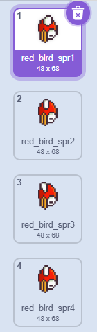
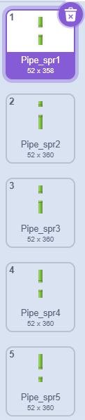

Flappy Bird: Primeiros Passos
Visão Geral do Jogo
Flappy Bird é um jogo bidimensional de sobrevivência infinita. O objetivo principal é manter o personagem no ar enquanto navega por uma série de obstáculos gerados continuamente. A tela se move para a esquerda, dando a impressão de que o pássaro está voando para a frente.
Importando e Organizando Fantasias
Como você já domina a criação de jogos, sabe que o segredo do movimento está na organização. Vamos transformar imagens estáticas em personagens vivos usando as Fantasias!
Sprites Dinâmicos
Um único Ator pode guardar várias "roupas" ou poses dentro dele. Isso facilita muito a sua programação:
- Animação de Voo: No mesmo objeto do passarinho, carregue as fantasias de "asa para cima" e "asa para baixo".
- Variedade de Obstáculos: Use o mesmo Ator para os canos, alternando entre as fantasias de "cano para cima" e "cano para baixo".
Fantasias do Pássaro

Fantasias dos Canos

Lembrete: O que é uma Fantasia?
É cada imagem diferente que um Ator pode assumir. Alternar entre elas rapidamente é o que cria a magia da animação no seu jogo!
Dica Pro: Mantenha nomes claros como "voando_1" e "voando_2". Organização é a melhor amiga de um programador experiente!
Arrumando o Cenário
Para o passarinho não voar em um fundo todo branco, precisamos arrumar o céu do nosso mundo.
- No cantinho da tela, procure a área especial chamada de Palco ou Cenário.
- Clique no botão de carregar cenário e escolha a imagem do computador ou crie uma.
- Pronto! O fundo da tela vai mudar na hora e seu jogo já vai parecer uma aventura completa.
Dica Importante: Sempre confira se os nomes dos arquivos dos seus desenhos estão fáceis de entender, como "passarinho_asa_cima" ou "cano_verde". Isso ajuda muito na hora de programar!
Movimentação: A Gravidade e o Pulo
Para criar uma queda realista, usamos uma variável que puxa o personagem para baixo o tempo todo:
- Defina a posição inicial no eixo X e Y para o herói não começar perdido.
- Crie a variável YSpeed para controlar a velocidade vertical.
- Dentro de um laço "sempre", adicione o valor de YSpeed ao eixo Y e depois diminua 1 dessa variável para criar aceleração.
Posição Inicial
quando clicado em bandeira
vá para x: -200 y: 0
Script de Queda
quando clicado em bandeira
mude [YSpeed] para 0
sempre
adicione YSpeed a
y
adicione -1 a
YSpeed
Variável de Velocidade (YSpeed)
Para criar uma queda suave, utilizamos uma variável que armazena a velocidade atual. A cada ciclo do jogo, um valor negativo é adicionado a essa variável, criando o efeito de aceleração da gravidade antes de atualizar a posição Y do personagem.
O Mecanismo de Pulo
O pulo precisa ser controlado para evitar que o jogador voe infinitamente apenas segurando o botão:
- Use um detector de tecla pressionada para disparar o impulso.
- Mude o valor de YSpeed para um número positivo (ex: 10) para lançar o personagem para cima.
- Use o comando "espere até que não tecla pressionada" para garantir um pulo por clique.
Dica de Programador
Se o jogo estiver muito difícil, tente diminuir o valor da gravidade (ex: -0.5) ou aumentar a força do pulo (ex: 12). Pequenos ajustes mudam tudo!
Geração Contínua de Obstáculos
O que são Clones? A Máquina de Bolhas de Sabão!
Imagine uma máquina de fazer bolhas de sabão. Você não precisa soprar cada bolha uma por uma, certo? Você só coloca a água com sabão lá dentro, liga o botão e a máquina solta centenas de bolhas sozinhas.
No Scratch, os Clones funcionam exatamente assim! Eles são como cópias automáticas. Veja como a mágica acontece na programação:
- A Receita Original: O Ator que você desenhou fica quietinho, geralmente escondido. Ele é como a água com sabão dentro da máquina, o molde de tudo.
- A Máquina Ligada: Quando você usa o bloco "crie clone", o Scratch começa a soprar as bolhas. Você pode programar para soltar uma cópia a cada segundo, ou várias de uma vez.
- O Estouro (Limpeza): Cada clone voa pela tela fazendo o que você mandou. Mas, para a tela não ficar cheia e o jogo não travar, usamos o bloco "apague este clone" quando a cópia chega no fim da tela. É exatamente como a bolha estourando quando encosta no chão!
Com os clones, você só precisa ensinar o caminho uma vez, e o computador faz o trabalho de multiplicar os desafios!
Obstáculos no Jogo
- Eles são criados fora da tela, à direita, e movem-se a uma velocidade constante para a esquerda.
- Eles sempre aparecem em pares (um no teto e um no chão). A distância do vão entre eles é fixa, mas a altura Y em que esse vão aparece é definida aleatoriamente.
- Quando saem completamente da tela pela esquerda, os canos são destruídos para não sobrecarregar o processamento.
Gerador de Clones (Obstáculos)
quando clicado em bandeira
vá para x: 0 y: 0
esconda
sempre
crie clone de este ator
espere 1.3 seg
Comportamento e Movimento do Clone
quando eu começar como um clone
mude para a fantasia número aleatório entre 1 e 5
mostre
vá para x: 300 y: 0
repita até que posição x < -250
adicione -5 a x
apague este clone
Atividade de Casa: O Voo do Passarinho
Chegou a hora de testar seus conhecimentos sobre gravidade e clones! Complete os desafios abaixo com base no que aprendemos.
Desafio da Gravidade
Aprendemos que a gravidade puxa nosso herói para baixo o tempo todo. Qual é o nome da variável que criamos para controlar a velocidade dessa queda livre?
R: O nome da variável é... _______________________________________________
Desafio do Game Over
Observe o script de colisão que analisamos:
se
(tocando em Pipe?)
ou
(tocando em borda?)
➜
mude player state para dead
Por que usamos o operador OU (bolinha verde) neste código em vez do operador E? O que aconteceria com o passarinho se usássemos o "E"?
R: __________________________________________________________________
Desafio dos Clones
Você é o mestre do jogo! Queremos que os canos apareçam na tela de forma imprevisível para deixar a aventura mais emocionante. Complete o código abaixo com valores que deixem o jogo bem dinâmico:
MODO IMPREVISÍVEL
sempre
➜ crie clone de este ator
➜ espere número aleatório entre e segundos
Lembrete
Para os canos não ficarem nem muito colados e nem muito distantes, escolha um tempo mínimo (como um segundo) e um tempo máximo (como três ou quatro segundos).